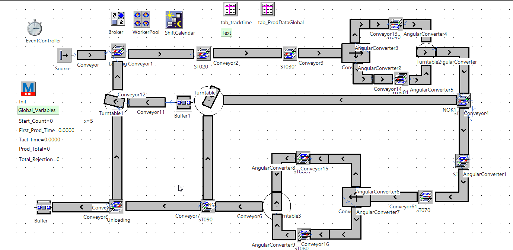
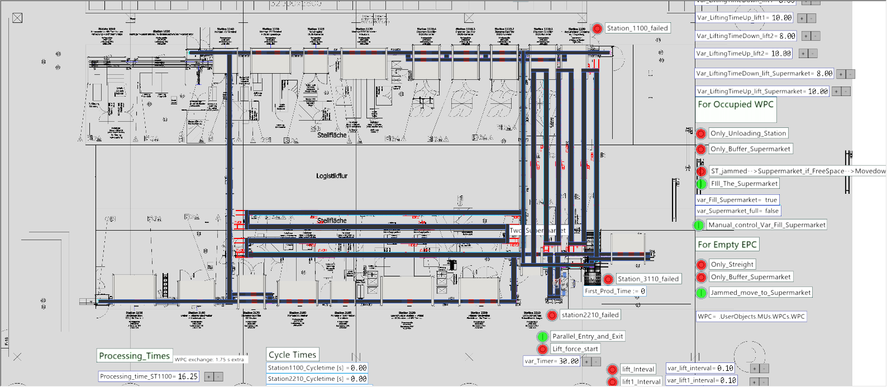
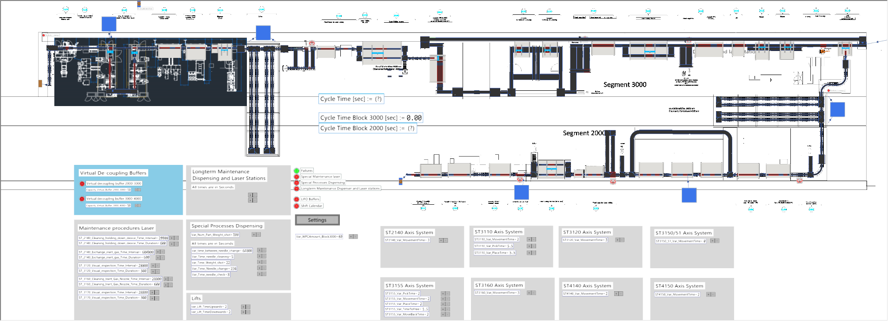
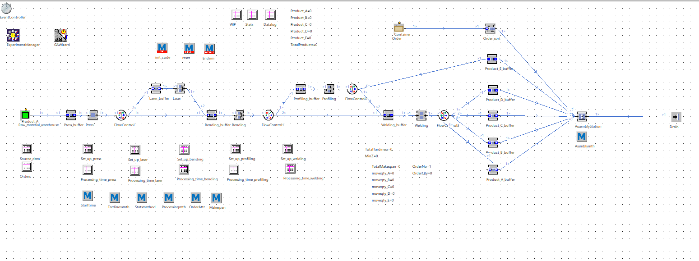
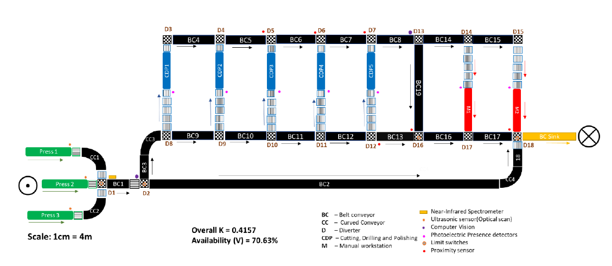
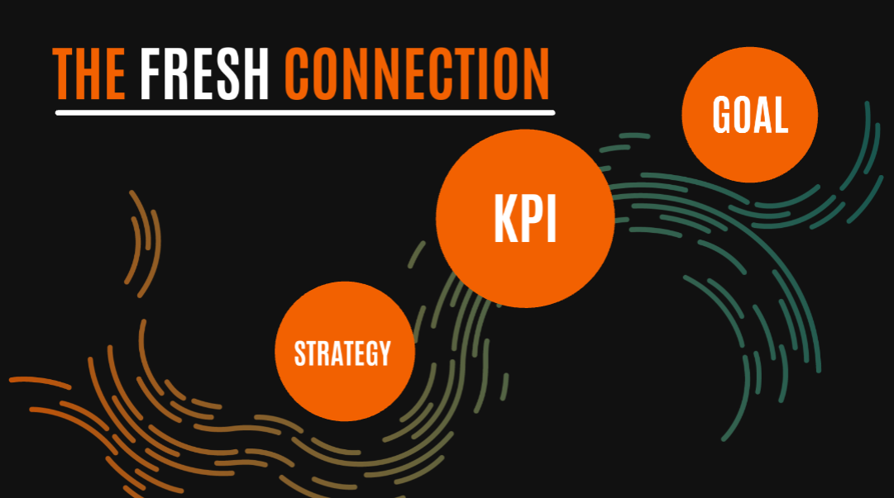
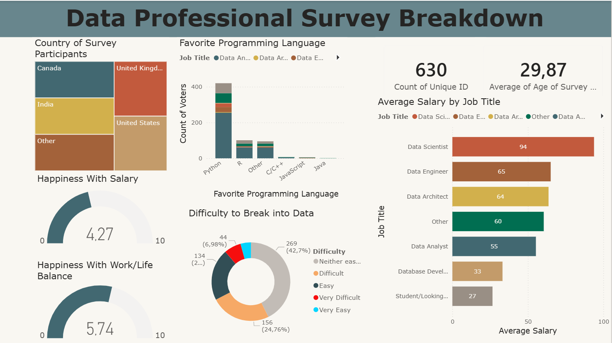
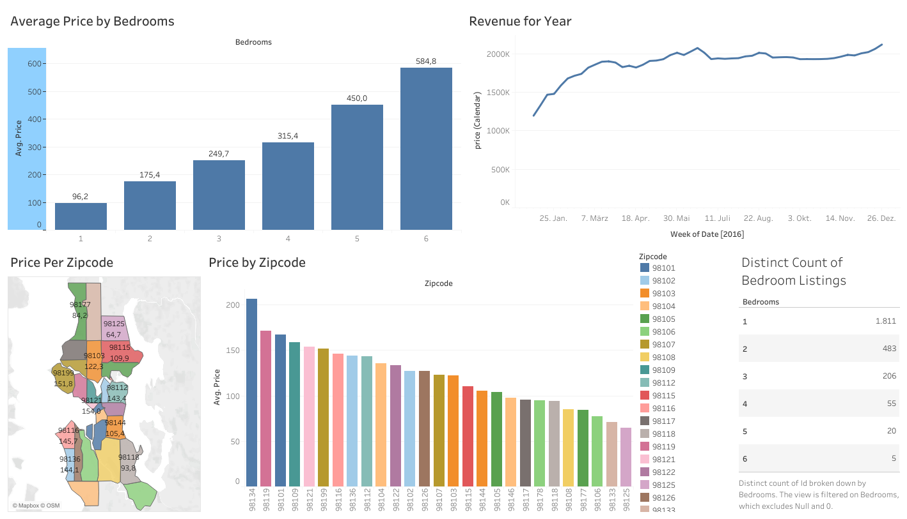

As the foundational phase of a compulsory internship at Bosch Manufacturing Solutions GmbH, this training project built a solid understanding of material flow simulation using Siemens Tecnomatix Plant Simulation. The project covered core simulation objects and workflows - including conveyor systems, supermarkets (buffer zones), turntables, angular converters, manual stations, and event-driven scripting methods. Through a series of structured, step-by-step simulation tasks, practical competency was developed in building and running simulation models, setting global variables, tracking KPIs, and interpreting results - forming the essential groundwork before transitioning to live customer projects.

Completed as part of the internship at Bosch Manufacturing Solutions GmbH, this confidential project addressed a critical bottleneck in a customer's existing production line. Using Siemens Plant Simulation, a digital model of the production line was built and multiple scenarios were developed to evaluate the strategic introduction of a supermarket (buffer zone) at various points in the line. An interactive user interface with scenario-control buttons was implemented to allow dynamic testing. Key performance indicators - including throughput, cycle time, and resource utilization - were analyzed across scenarios to deliver a data-driven recommendation for the most efficient supermarket placement and configuration.

Also completed during the Bosch Manufacturing Solutions GmbH internship, this confidential project involved designing and simulating a concept production line capable of manufacturing two distinct products - each with unique assembly and testing process requirements. The work encompassed flexible production line layout design, workstation configuration, resource allocation strategy, and changeover planning. Siemens Plant Simulation was used to model the dual-product line, run production scenarios for both products, and assess cycle times, throughput, and equipment utilization - ultimately delivering a simulation-validated concept for an adaptable, high-efficiency production system.

This project involved the end-to-end implementation of a production planning and optimization workflow using Siemens Tecnomatix Plant Simulation. Starting from real production data, an initial material flow simulation model was constructed to replicate the existing manufacturing system. A Genetic Algorithm (GA) assistant was then applied to minimize two competing objectives - makespan and total tardiness. The project further explored the sensitivity of the optimization by experimentally tuning parameters and adjusting the weighting of the objective function, providing deeper insight into the trade-offs between production speed and schedule adherence.

In this project, a fully automated Material Handling System (MHS) was designed from the ground up for a complex industrial facility. The system architecture integrated multiple conveyor belts, diverters, accumulators, and angular converters, all coordinated through a network of sensors and actuators to ensure precise, uninterrupted material flow. Component selection was driven by throughput requirements, system reliability targets, and layout constraints. The project also incorporated a reliability analysis of the overall system, evaluating failure modes and assessing the impact of component downtime on overall system performance.
The Fresh Connection Juice Company Business Simulation

In this cross-functional business simulation, the role of Supply Chain Manager was taken on for The Fresh Connection - a juice manufacturing company facing declining profitability. Responsibilities included monitoring and interpreting supply chain KPIs, managing inventory levels across both inbound and outbound warehouses, and aligning procurement and logistics decisions with sales and operations planning. Through close interdepartmental coordination and iterative decision-making across multiple simulation rounds, the team successfully reversed a negative return on investment, improving ROI from -4.0% to +4.95%.
E-Commerce Shipping Prediction
This project focused on improving delivery performance for an international electronics e-commerce company. A Python-based algorithm was developed to calculate on-time delivery rates across different shipment modes, providing operational insight into logistics performance. Building on this analysis, an Artificial Neural Network (ANN) was implemented using PyTorch to predict whether an individual order would be delivered on time or not. The model was trained, validated, and evaluated on historical shipment data, demonstrating the potential of machine learning to proactively flag at-risk deliveries and support smarter logistics decision-making.
A Structured Literature Review on Supply Chain Mapping

This structured literature review examined the growing importance of supply chain mapping in an era of increasing global disruption - accelerated by the vulnerabilities exposed during the COVID-19 pandemic. The review systematically identified and evaluated methods for uncovering supply chain risks, catalogued existing visualization techniques used to represent complex supplier networks, and assessed available software tools that support supply chain mapping efforts. The project concluded with a critical analysis of current gaps in the literature and practical recommendations for organizations seeking to build more transparent and resilient supply chains.

This project involved cleaning, transforming, and visualizing a real-world survey dataset collected from data professionals across various industries and roles. The raw survey data was first processed in Power BI's Power Query Editor - handling inconsistencies, restructuring salary range responses, and standardizing categorical fields such as job title and country. The cleaned dataset was then used to build an interactive dashboard that surfaced key insights including favourite programming languages by role, average salary across job titles, self-reported work-life balance and job satisfaction scores, and the perceived difficulty of breaking into the data field. The final dashboard provides a comprehensive snapshot of the current data profession landscape.
This project demonstrates a structured approach to data cleaning and preparation using SQL Server. Working with a raw real estate housing dataset, a series of SQL transformation techniques were applied to improve data quality and usability - including standardizing date formats, populating missing property address values, splitting combined address fields into individual columns, replacing abbreviated categorical values with descriptive labels, removing duplicate records, and dropping redundant columns. The result is a clean, well-structured dataset ready for downstream analysis or reporting.

This project uses SQL Server to conduct an exploratory analysis of a global COVID-19 dataset covering cases, deaths, and vaccination records across countries and continents. Key analytical techniques included joins, CTEs, temporary tables, window functions, and aggregate functions to surface meaningful insights - such as infection rates relative to population, death percentages by country, continental mortality comparisons, and the rolling progress of global vaccination campaigns. The queries are structured to support further visualization and dashboard development.

This project involved designing and building an interactive Tableau dashboard to analyze AirBnB listing data and help users make informed decisions - whether as hosts setting competitive prices or as guests evaluating value across neighborhoods. The dashboard visualizes key metrics including average price by location and property type, revenue trends over time, occupancy patterns, and the relationship between the number of bedrooms and listing price. Filters and interactive elements allow users to explore the data dynamically and extract insights relevant to their specific needs.